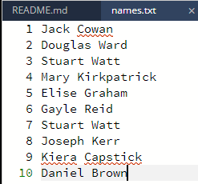

File Handling
At Higher level you need to be able to read data from and write data to files. In Python you open a file with open(filename, mode) — where the mode is "r" to read or "w" to write — and you should always close() the file when you are finished.
Key Terms & Knowledge
Reading from a Text File
Reading from a file takes the contents of a file and adds it to your program. This allows the program to take large amounts of input from a file, instead of the user typing in all the required data.
Let's say a program takes in pupil test scores for 50 pupils. Instead of the user typing in all of this data, the program could instead read this data from a file. This is more efficient as it removes the time taken to type in the 50 scores, and prevents human error when typing the data.
Reading a Single Value
To retrieve saved data, open the file in read mode ("r"). The read() function retrieves all of the data at once into a single variable. Use this approach when the file only contains a single value that you have to read in.
# Open the file for reading
scorefile = open("scores.txt", "r")
highscore = scorefile.read()
print(highscore)
# Close the file
scorefile.close()
This program accesses a file named scores.txt containing a high-score value and displays it.
# Open the file for reading
passwordfile = open("passwd.txt", "r")
# Read the whole contents of the file
saved_password = passwordfile.read()
# Ask user to enter password
userpass = input("Enter your password")
if saved_password == userpass:
print("Access granted")
else:
print("Access denied")
# Close the file
passwordfile.close()
This program reads a password from passwd.txt, prompts the user for input, and checks whether the entries match.
Reading Multiple Lines

In the following example, we are going to read in multiple lines of data. We are only going to read in a single type of data — in this example, we will be reading in 10 names.
We start off by opening the file. In this case our file is called "names.txt". You can see the contents in the image opposite, or use the file tree on the left to check the file for yourself.
names_file = open("names.txt", "r")
Remember to use the "r" mode parameter so the program knows you are reading data.
Next, we have to read each line. Instead of using the read() function as we did in the previous example, we need to use the readlines() function, as we are reading multiple lines. So we would have:
names = names_file.readlines()
This will read each line into an array. In this case we are assigning the array returned by the readlines() function to the names variable. So names will store our list of names.
Any time you read in a multi-line file, you will need to loop through your data. As we now have an array of names, what we can do is:
for name in names:
This will loop through each name in the array.
To print out each name to check we have read the file correctly, we can then do:
for name in names: print(name)
Finally, once we are finished with the file, we close it:
names_file.close()
Reading from a File — Video Explanation
Writing to a File
Writing to a file uses write mode ("w"). This creates the file if it does not exist, but be careful — it overwrites whatever was previously in the file. The write() function saves data to the file, and you must close() the file when finished.
messagefile = open("message.txt", "w")
messagefile.write("Bla bla, this message will be saved in the file")
messagefile.close()
animalfile = open("animals.txt", "w")
elephant = "Arthur"
animalfile.write(elephant)
animalfile.close()
Writing Multiple Lines
To write several entries on separate lines, add the newline character "\n" to the end of each piece of data.
name = "Jane"
outputFile = open("name.txt", "w")
for counter in range(10):
outputFile.write("The name is " + name + "\n")
outputFile.close()
Writing to a File — Video Explanation
Reading from CSV File
Comma-separated values (.csv) files are often used to store table-like data. Values are stored line by line, with one line for each row of data, and columns separated by commas. The split(",") function separates each line into its individual fields.
Once a line has been split, you can populate either an array of records or a set of parallel 1D arrays.
Reading into an Array of Records
runners = []
runnerFile = open("runner.csv", "r")
for line in runnerFile:
fields = line.split(",")
runnerName = fields[0]
runnerClub = fields[1]
runnerTime = float(fields[2])
runners.append({"name": runnerName, "club": runnerClub, "time": runnerTime})
runnerFile.close()
Reading into Parallel Arrays
names = []
clubs = []
times = []
runnerFile = open("runner.csv", "r")
for line in runnerFile:
fields = line.split(",")
names.append(fields[0])
clubs.append(fields[1])
times.append(float(fields[2]))
runnerFile.close()
Using the Data
Once the records are loaded, loop through them to display or process the data.
for counter in range(len(runners)):
print("The runner " + runners[counter]["name"] + " from " + runners[counter]["club"] + " has a time of " + str(runners[counter]["time"]))
Reading from CSV File — Video Explanation